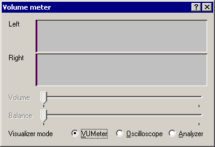

VirtualDub help - Dialogs: Capture volume meter | |||
| On a crash... Dialogs: Video filtersVideo frame rate control Video color depth Video range Video compression Audio filters Audio interleaving Audio compression Audio conversion Audio volume Capture settings Capture preferences Capture volume meter Preferences |  Displays input audio volume and allows for volume level control.
| ||